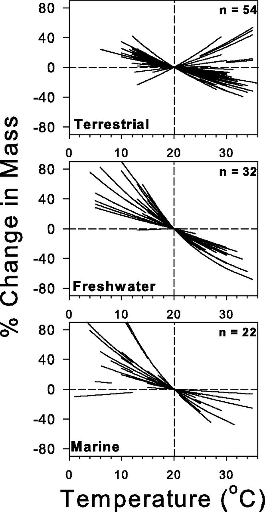

3.- Effects of Global Change on Complex Communities
Human disturbance has caused, and will continue to cause, profound impacts on all ecosystems across the world. Taken together, the effects that human impact have started to cause what has been called the 6th Mass Extinction, which we are currently witnessing. This mass extinction is comparable to previous mass extinction events such as the Cretaceous-Paleogene, in the sense that by different estimates the extinction rate of specie is currently between 100–1,000 times greater than the background extinctions rate.
These impacts have translated, among other things, into a fundamental reorganisation of biodiversity across spatial and temporal scales. The main drivers of this anthropogenically-derived global change on biodiversity modification include: habitat loss and fragmentation, global warming, biological invasions, among others. In order to design sound conservation policies and strategies to mitigate these impacts on biodiversity, as well as to fully understand their effects on ecosystems we need predictive theory that allow us to link ecological mechanisms to ecosystem organisation and responses to change.

3.1 Warming
Warming has prompted a series of responses from species. Three main universal responses to warming have been identified across species and taxonomic groups.
Range shifts
In an attempt to track their ideal climatic conditions (i.e. to maximise fitness) species have shifted their geographical distribution ranges polewards latitudinally, and towards higher elevations altitudinally. Even though responses vary among species, this aspect of biodiversity reorganisation is more or less universal.
Given this, current research has focused on identifying potential universal drivers of species range shifts that might improve our predictive ability of species range shifts. Recent efforts to understand the determinants of differential shifts across bird species in the UK have revealed that both land cover and climate both differentially affect species that are more distributed towards the north vs more southernly species.

The first step in the analysis of range shifts is quantifying the actual shifts:
Body size

A second universal response to climate change is changes on body size. Both within species and the distribution of body sizes across species within communities. This response can be linked to three classical ecological hypotheses relating temperature to body size.
1.- Bergmann’s rule states that species and organisms or larger sizes tend to be found in colder environments, while small-sized species and organisms tend to inhabit warmer regions.
2.- James’ rule states that within the same species, populations of smaller-sized individuals would be found in the warmest parts of the species’ range.
3.- The temperature size rule stating that individual body size (in ectotherms) decreases with increasing temperature.
Taken together, these three rules can help us generate hypotheses on the potential effects of warming on natural communities. In particular, it would be expected (and it has been demonstrated in natural populations), that both individuals within species (by reaching maturity earlier) are becoming smaller in general, and the body size distributions of species within communities are being shifted towards smaller values. This has profound consequences for the networks of ecological interactions between species.
Vital rates
A further observed effect of warming on natural populations is a generalised increase on the pace of life. Productivity and respiration have been observed to increase with temperature in aquatic mesocosms, impacting the balance between the distribution of individuals of different species across trophic levels.
Ecological interactions such as predator-prey relationships have been observed to be affected by these changes in vital rates. Predators live faster, and as such they need to eat more prey to satisfy their metabolic demands. In controlled experiments, attack rates of predators have been observed to increase with temperature, while at the same time handling time (the time a predator employs in processing a prey item) has been observed to decrease. These phenomena prompt an increase in the strength of predator-prey interactions, making the effects of predator populations on their prey stronger. If sustained over large ecological time scales, this trend has the potential to lead to the extinction of prey species, and their predator itself as a consequence.
Consequences for ecological interactions
The species’ responses to warming identified above, either acting along or in tandem, have the potential to prompt a radical reorganisation of ecosystems across the globe. This reorganisation can facilitate the emergence of novel communities from climate change in which networks of species interactions display different structural properties relative to the communities from which they originated. This changes in structure can have profound consequences for the persistence and stability of theses systems.
In particular, novel communities are expected to be characterised by:
1.- A reduction of species body sizes
2.- A shift in the
distribution of body sizes within communities (with a dominance of small
species)
3.- The loss of specialised interactions (due to the range
expansion of species that encounter new partners)
4.- An increase in
the strength of ecological interactions
5.- Enemy release as prey
move at a different pace than their predators
6.- A loss of
generalist consumers (from source communities from which species move
out)
7.- New interactions for generalist consumers (within sink
communities into which species move in)

3.2 Invasions
3.3 Habitat loss
References
Cowie, R.H., Bouchet, P. and Fontaine, B. (2022) The Sixth Mass Extinction: fact, fiction or speculation? Biological Reviews, 97, 640-663.
Lurgi, M. et al. (2012) Novel communities from climate change. Phil. Trans. Roy. Soc. B. 367, 2913-2922.
Parmesan, C., Ryrholm, N., Stefanescu, C. et al. (1999) Poleward shifts in geographical ranges of butterfly species associated with regional warming. Nature, 399, 579–583.
Rall, BC. et al. (2012) Universal temperature and body-mass scaling of feeding rates. Phil. Trans. Roy. Soc. B. 367(1605), 2923-2934.
Taheri, S, García-Callejas, D, Araújo, MB. (2021) Discriminating climate, land-cover and random effects on species range dynamics. Global Change Biology, 27, 1309– 1317.
Yvon-Durocher, G. et al. (2010) Warming alters the metabolic balance of ecosystems. Phil. Trans. Roy. Soc. B. 365(1549), 2117-2126.